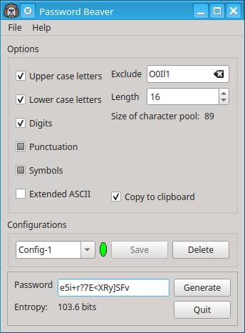
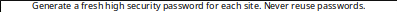

Password Beaver is a lightweight, easy to use and secure password generator. It creates passwords that are hard to guess based upon random selection from the printable characters of the ASCII character set. This can be expanded to use the full ISO-8859-1 character set, sometimes known also as Extended ASCII or Latin 1. A list of characters can be arbitrarily excluded if desired and the generated password can be automatically copied to the clipboard.
Password Beaver starts with a character pool to select characters from based upon the selected options. By default the pool starts as the printable characters from either the ASCII character set or the ISO-8859-1 character set, the most common Extended ASCII character set. The characters are divided into several groups, upper case letters, lower case letters, digits, symbols, and everything else to which we refer somewhat inaccurately as punctuation.
It can be modified to omit, request or require characters from one or more of these groups. Further, an arbitrary set of characters can be excluded. You may want to do this to improve readability in case the password needs to be manually typed or perhaps to satisfy a Web site which doesn't accept some characters in its passwords. The length of the password can be set to minimum length of 8 characters and a maximum of 99. After a password is created it is copied to the clipboard but this can be turned off if desired.
The generated passwords are not easy for most people to remember so Password Beaver is best used with a password manager. This makes them harder to crack because a dictionary attack is very unlikely to succeed and a brute force attack will likely take a very long time. Generally the best choice is to pick a long password from a large pool of characters. The entropy is a good but not infallible indication of the strength of a password. See the section About Passwords below.
Generally the best choice is to pick a long password from a large pool of characters. If the ASCII character set is chosen (i.e. Extended ASCII is not chosen) there will be 85 printable characters to select from while selecting Extended ASCII (usually referred to as ISO-8859-1 or Latin 1) will give 155 possible characters.
However, a program or Web site that requires a password may not accept all possible characters or it may set some requirements such as requiring or forbidding certain groups or characters. Using the check boxes, you can exclude, require or merely request characters from the groups.

In
this case, Upper
case letters,
Lowercase
letters and
Digits
are
required.
Symbols and
Punctuation
characters
are requested.
Extended ASCII
characters
are not used. The potentially confusing characters O (upper O), 0
(zero), I (upper I), l (lower L) and 1 (digit) are excluded. The
password has a length of 16 characters. The green ellipse indicates
that this configuration has been saved as Config-1. The new password
is taken from a character pool of 89 characters and the Entropy is
103.6 bits.
A
screenshot of Password Beaver.
Passwords are created by randomly taking characters from the base character set (ASCII or Extended ASCII). Normally you should make passwords with characters from all of the classes but there may be reasons that you want to require or exclude some classes or characters. This is usually because a particular Web site has its own requirements.
The character class check boxes have three states.
If the checkbox is unchecked, that group of characters will be excluded from the character pool.
If it is fully checked at least one character from the group will be required.
If it is partly checked, characters from that group are requested. They may appear in the password or they may not.
You may want to exclude certain characters arbitrarily from the character pool. It may be that a Web site does not accept some characters or you may wish to avoid characters that are easily confused such as I (upper I) and l (lower L). Enter the characters in the Exclude text editor.
The length of the password can be changed in the Length spin box. The allowed range is 8 to 99 characters. The default length of 16 is a good choice for most uses.
This is the current size of the character pool from which passwords are taken is shown underneath the Length control. This field is for information only and reflects the choices made with the check boxes and the Exclude editor.
The default behaviour of Password Beaver is to copy the password to the system clipboard as soon as it is generated. Turn this off if you do not want to do this but prefer to copy the password by hand.
Password Beaver maintains a database of configurations to simplify creating passwords for sites with particular requirements. In the Configurations section there is a combo-box that allows you to select sets of options by name and to enter names for new sets of options, a small indicator to remind you when the options have been modified but not saved and two push buttons labelled Save and Delete.
When Password Beaver is first started it loads a default configuration named “Default”. This configuration can be modified but you cannot save or delete it. However, the name can be changed and the configuration saved under this new name. In the screenshot the default configuration has been modified and saved as “Config-1”.
To the right of the combo box there is a small round widget. If it is green it indicates that the current configuration is stored in the database under the current name. If it is red it indicates that either
there is no set of options with the name shown in the editor or
that there is an entry in the database with that name but the stored options are different from those shown.
Pressing the Save button will store the data by creating a new entry if one with the current name does not exist or by overwriting the stored options with the new ones. The Delete push button will remove the named set of options from the database.
Note that the Save and Delete buttons can be enabled or disabled depending upon whether either operation is permitted. In particular, they enforce the read only status of the ‘Default’ entry. If ‘Default’ is the current item, both push buttons are disabled, even if the widget is red showing that the options have been changed. If you wish to save the new options, type in a new name and save the options with that.
Passwords provide excellent access security but are getting a bad reputation because many people are using them poorly. Often they are too short or too simple or a poor choice such as '123456' or 'password' is made because the users don't realise how important it is to make a good choice. Lets go through some of the things you should think about when choosing a password.
Although much of your password security is up to you, the places that you use them to enter have a responsibility too. A good site will create a cryptographically secure hash of your password and store that. When you log in, the password you provide will be hashed and compared to the stored hash. Your password is never stored explicitly so a bad guy who steals it from the site's server will not have a useful password. Trying to use the hashed version as the password will result in its being hashed and this hash will be completely different from the stored one, making it almost useless.
Some sites with lazy administrators do store passwords explicitly. If you have ever had a forgotten password emailed to you then you have dealt with such a site. If their list of passwords is released the passwords become immediately useful. Tom Scott on the YouTube channel Computerphile gives much more on storing passwords.
The big problem is that you, as a user, is that you generally can't tell how securely a site stores its passwords. In spite of this, you don't want to help the bad guys so always, always, always:

The
There’s more to ‘hard to guess’ than you might think. Not only should it be hard for a human to guess but the technology of guessing passwords by machine is very well developed. The excellent YouTube channel Computerphile has videos on password choosing and password cracking which are well worth watching. Randall Munroe has created one of his wonderful Web comics about choosing a password.
What you have to do is to make a password which is hard to guess for both man and machine and this is not hard. Essentially, you have to prevent what are referred to as dictionary and brute force attacks.
Enough passwords have been released to the Internet as the result of break-ins into insecure Web sites that dictionaries of common passwords exist that can be tested against your password very quickly in a so-called dictionary attack. Ordinary English words (or words in other languages) are, of course, also available as dictionaries making them insecure as well.
A brute force attack takes advantage of those using passwords which are too short and are created from a small pool of characters. Imagine creating a password that is four characters long and is created from the 26 lower case ASCII characters. There are 14 950 ways of doing this and someone could easily
Dictionary attacks rely upon the laziness of users when they create passwords. If we look at a bit of the NordPass most common password list for 2021, we see our old favourites.
Table 1: Ten most popular bad passwords.
Rank |
Password |
|---|---|
1 |
123456 |
2 |
123456789 |
3 |
12345 |
4 |
qwerty |
5 |
password |
6 |
12345678 |
7 |
111111 |
8 |
123123 |
9 |
1234567890 |
10 |
1234567 |
The entropy of the password is a measure of how many guesses would
be necessary to guess it. Specifically, it is log2(n)
where n is the number of possible
passwords given the password length and the character pool size. This
is described in a Wikipedia
article.